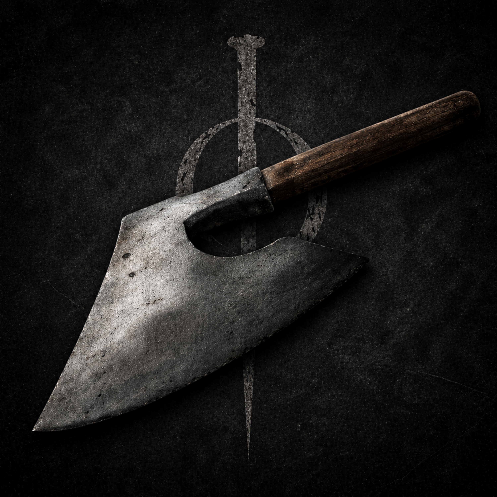

Nidviser Out Friday 02.10.2026
Bleaker, colder, and a tad more melancholic, Nidviser tells twelve separate stories centered on a common theme. Where Dalmunr was a concept album set to one fictional tale, this album draws its stories from 18th- and 19th-century capital punishments in Norway.
The musical vision is to show more of Blodtørst's metal spectrum by balancing bleak and cold aggressiveness with primal brutality. The album was recorded, mixed, and mastered at Grimsland Studio in Trondheim.
- (01) Atter Rir Vinteren
- (02) Morderske
- (03) Skarprettaren
- (04) Skinndau
- (05) Deus Kaos
- (06) Golem
- (07) Tvil
- (08) Dødsdåp
- (09) Dei Gloriam
- (10) Utburd
- (11) Når Han Ser Vred
- (12) Tåkenatt